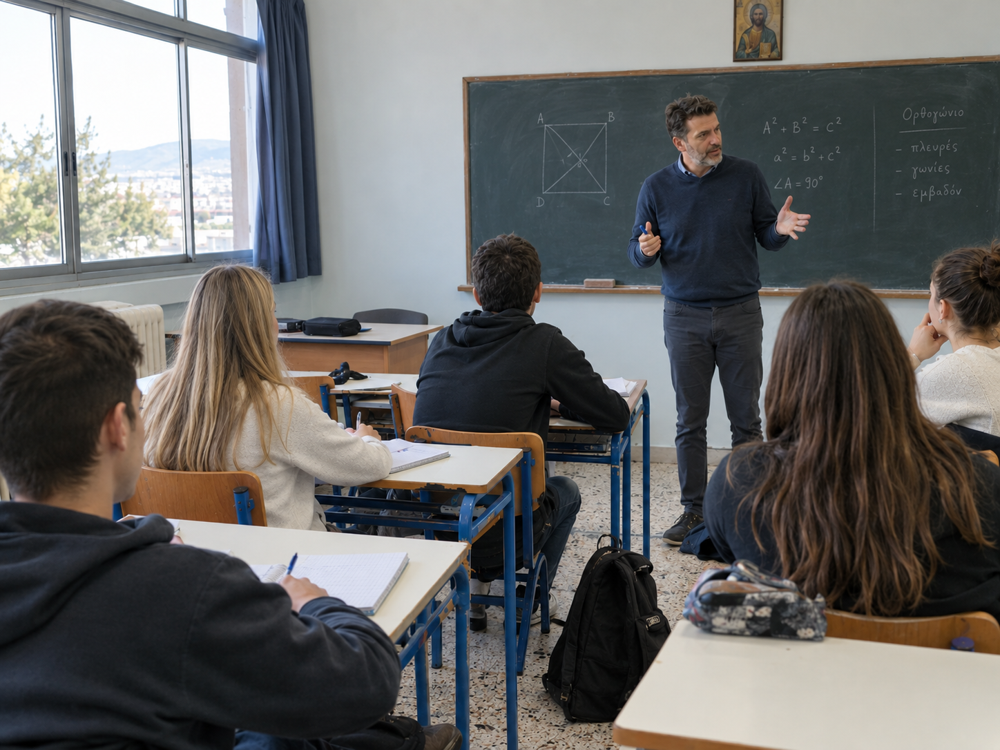
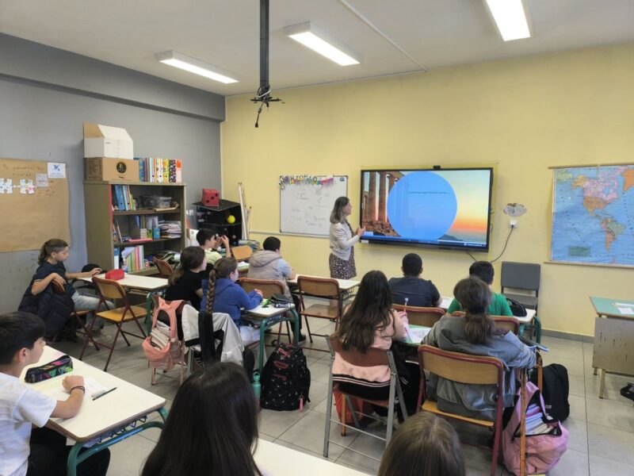
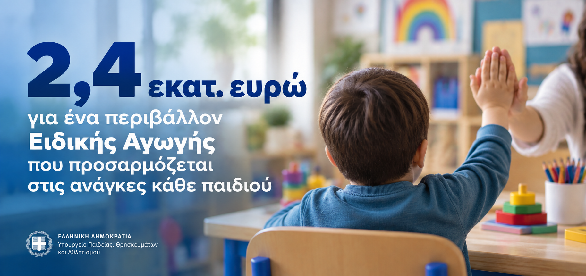
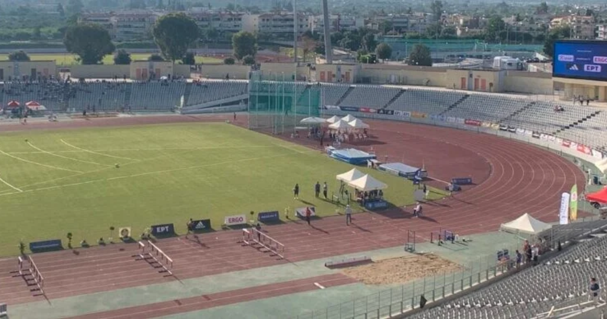
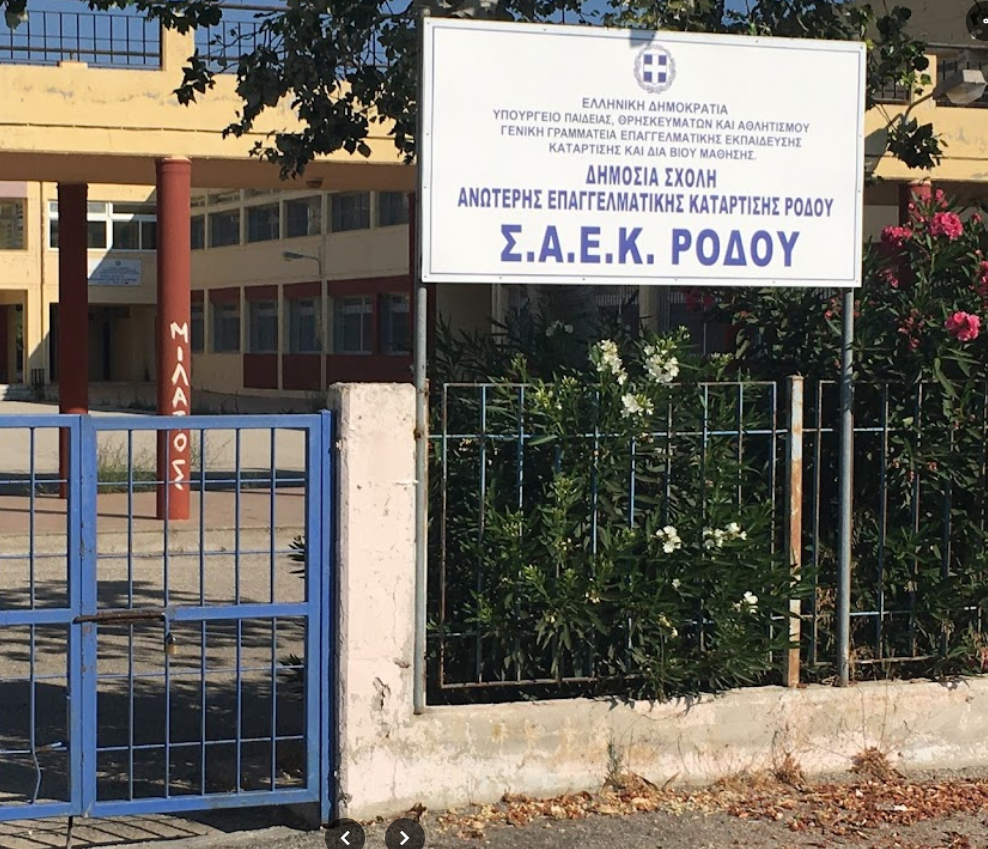
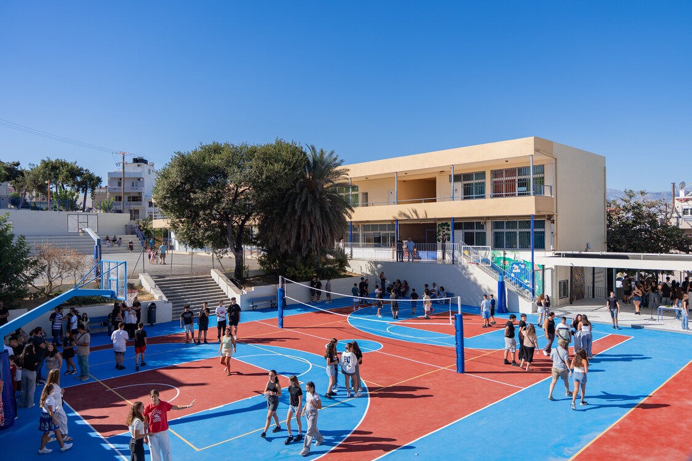

ΠΑΝΕΛΛΑΔΙΚΕΣ
Επαναληπτικές Πανελλαδικές 2026: Ανακοινώθηκαν οι βαθμολογίες
Ανακοινώθηκαν οι βαθμολογίες των Επαναληπτικών Πανελλαδικών Εξετάσεων 2026 σε μαθήματα Γενικής Παιδείας, Προσανατολισμού και Μουσικά Μαθήματα.
Διάβασε περισσότερα →ΕΚΠΑΙΔΕΥΤΙΚΑ ΝΕΑ
Νέα, ευκαιρίες και εξελίξεις που αφορούν μαθητές, φοιτητές, εκπαιδευτικούς και ολόκληρη την εκπαιδευτική κοινότητα.

ΚΥΡΙΟ ΘΕΜΑ
Το Υπουργείο Παιδείας ανακοίνωσε το πρόγραμμα των Πανελλαδικών Εξετάσεων του 2027. Οι εξετάσεις για τα ΓΕΛ ξεκινούν στις 28 Μαΐου, ενώ για τα ΕΠΑΛ στις 29 Μαΐου.
Διάβασε περισσότεραΤΕΛΕΥΤΑΙΑ ΝΕΑ
ΠΑΝΕΛΛΑΔΙΚΕΣ
Ανακοινώθηκαν οι βαθμολογίες των Επαναληπτικών Πανελλαδικών Εξετάσεων 2026 σε μαθήματα Γενικής Παιδείας, Προσανατολισμού και Μουσικά Μαθήματα.
Διάβασε περισσότερα →
ΣΧΟΛΙΚΟΣ ΑΘΛΗΤΙΣΜΟΣ
Με αθλητικές δράσεις και δραστηριότητες σε σχολεία σε όλη τη χώρα πραγματοποιείται στις 25 Σεπτεμβρίου 2026 η 13η Πανελλήνια και Ευρωπαϊκή Ημέρα Σχολικού Αθλητισμού.
Διάβασε περισσότερα →
ΠΑΝΕΠΙΣΤΗΜΙΑ
Οι ηλεκτρονικές αιτήσεις για μετεγγραφές και μετακινήσεις φοιτητών στα Α.Ε.Ι. και τις Α.Ε.Α. της χώρας ξεκίνησαν την Πέμπτη 24 Σεπτεμβρίου 2026. Αιτήσεις έως και την Παρασκευή 2 Οκτωβρίου 2026 στις 14:00.
Διάβασε περισσότερα →
ΣΧΟΛΕΙΑ
Πανελλήνιος μαθητικός διαγωνισμός δημιουργίας ταινίας μικρού μήκους με θέμα «Επέτειοι και προσωπικότητες της Ελληνικής Επανάστασης» διοργανώνεται για το σχολικό έτος 2026–2027.
Διάβασε περισσότερα →
ΠΑΝΕΛΛΑΔΙΚΕΣ
Ειδική ρύθμιση για την εισαγωγή στην Τριτοβάθμια Εκπαίδευση υποψηφίων από περιοχές που επλήγησαν από φυσικές καταστροφές για το ακαδημαϊκό έτος 2026-2027.
Διάβασε περισσότερα →
ΕΚΠΑΙΔΕΥΤΙΚΟΙ
Το Υπουργείο Παιδείας ανακοίνωσε 71 νέες προσλήψεις μελών Ειδικού Εκπαιδευτικού Προσωπικού (ΕΕΠ) και Ειδικού Βοηθητικού Προσωπικού (ΕΒΠ) για το διδακτικό έτος 2026–2027.
Διάβασε περισσότερα →
ΧΡΗΜΑΤΟΔΟΤΗΣΗ
Δύο νέες παρεμβάσεις συνολικού ύψους 2,4 εκατ. ευρώ προωθεί το Υπουργείο Παιδείας για την ενίσχυση της Ειδικής Αγωγής.
Διάβασε περισσότερα →
ΕΚΠΑΙΔΕΥΤΙΚΟΙ
Το Υπουργείο Παιδείας ανακοίνωσε 202 νέες προσλήψεις αναπληρωτών στην Πρωτοβάθμια και Δευτεροβάθμια Εκπαίδευση, ώστε να καλυφθούν λειτουργικά κενά που προέκυψαν.
Διάβασε περισσότερα →
ΠΑΝΕΠΙΣΤΗΜΙΑ
Ξεκίνησε η διαδικασία για την εισαγωγή διακριθέντων αθλητών και αθλητριών στην τριτοβάθμια εκπαίδευση για το ακαδημαϊκό έτος 2026–2027.
Διάβασε περισσότερα →
ΕΠΑΓΓΕΛΜΑΤΙΚΗ ΕΚΠΑΙΔΕΥΣΗ
13.927 αιτήσεις υποβλήθηκαν στην Α΄ φάση για τις Δημόσιες ΣΑΕΚ, με 13.175 υποψηφίους να ολοκληρώνουν την εγγραφή τους. Η συμπληρωματική περίοδος αιτήσεων διαρκεί έως τις 30 Σεπτεμβρίου.
Διάβασε περισσότερα →
ΣΧΟΛΕΙΑ
Νέα έργα και παρεμβάσεις στις σχολικές υποδομές παρουσιάστηκαν στο Ηράκλειο, με στόχο καλύτερες συνθήκες μάθησης και περισσότερες ευκαιρίες για τους μαθητές.
Διάβασε περισσότερα →ΠΑΝΕΛΛΑΔΙΚΕΣ
Το Υπουργείο Παιδείας ανακοίνωσε το πρόγραμμα των Πανελλαδικών Εξετάσεων του 2027. Οι εξετάσεις για τα ΓΕΛ ξεκινούν στις 28 Μαΐου, ενώ για τα ΕΠΑΛ στις 29 Μαΐου.
Διάβασε περισσότερα →Αν γνωρίζεις μια σημαντική εκπαιδευτική είδηση, ένα πρόγραμμα, έναν διαγωνισμό ή μια ευκαιρία που αξίζει να μάθουν περισσότεροι νέοι, μπορείς να επικοινωνήσεις μαζί μας.
Επικοινώνησε μαζί μας